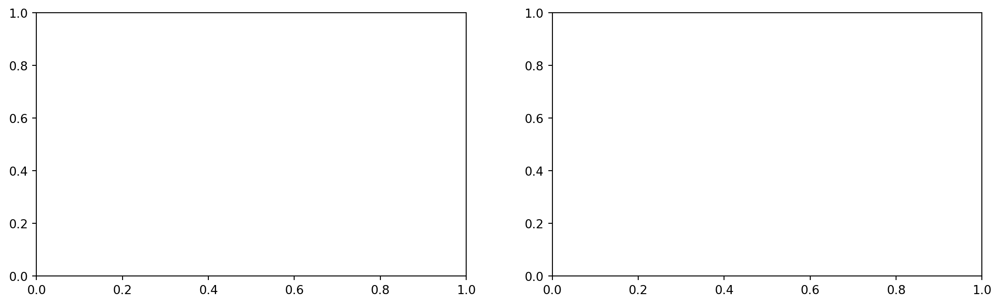
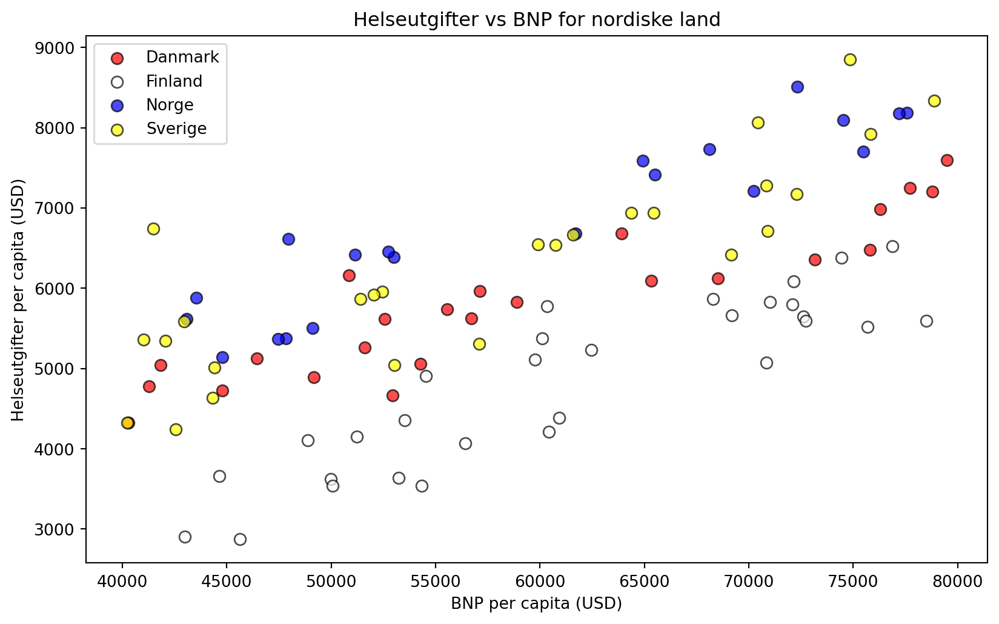

Dette notatet er skrevet av en LLM som supplement til forelesningsmateriell i HON2200.
Læringsmål
Etter å ha jobbet gjennom dette notatet skal du kunne:
Forstå forskjellen på kategoriske og numeriske variabler
Forklare hvorfor vi trenger one-hot encoding
Bruke pd.get_dummies() til one-hot encoding
Bruke kategoriske variabler i lineær regresjon
Unngå “dummy variable trap”
Kategoriske vs. numeriske variabler
Numeriske variabler har en naturlig ordning og målbart avstand: - Temperatur (20°C er 10° varmere enn 10°C) - Alder (40 år er dobbelt så mye som 20 år) - Inntekt
Kategoriske variabler er grupperinger uten naturlig tall-verdi: - Farge (rød, blå, grønn) - Land (Norge, Sverige, Danmark) - Yrke (lærer, lege, ingeniør)
import pandas as pdimport numpy as npimport matplotlib.pyplot as pltfrom sklearn.linear_model import LinearRegression# Eksempel: Dyredatadf = pd.read_csv("../data/animal_data.csv")df.head()
Animal
Length
Height
0
Lion
2.402035
1.206975
1
Lion
2.666899
1.239460
2
Lion
2.667127
1.353127
3
Lion
2.333006
1.221849
4
Lion
2.302637
1.269838
Problemet med kategoriske data
Mange maskinlæringsalgoritmer forventer numeriske input. Hva skjer om vi bare gir kategoriske variabler tall-etiketter?
---------------------------------------------------------------------------KeyError Traceback (most recent call last)
File ~/.pyenv/versions/hon2200/lib/python3.9/site-packages/pandas/core/indexes/base.py:3621, in Index.get_loc(self, key, method, tolerance) 3620try:
-> 3621returnself._engine.get_loc(casted_key) 3622exceptKeyErroras err:
File ~/.pyenv/versions/hon2200/lib/python3.9/site-packages/pandas/_libs/index.pyx:136, in pandas._libs.index.IndexEngine.get_loc()
File ~/.pyenv/versions/hon2200/lib/python3.9/site-packages/pandas/_libs/index.pyx:163, in pandas._libs.index.IndexEngine.get_loc()
File pandas/_libs/hashtable_class_helper.pxi:5198, in pandas._libs.hashtable.PyObjectHashTable.get_item()
File pandas/_libs/hashtable_class_helper.pxi:5206, in pandas._libs.hashtable.PyObjectHashTable.get_item()KeyError: 'species'
The above exception was the direct cause of the following exception:
KeyError Traceback (most recent call last)
Input In [2], in <module> 1# Naiv koding: Art = 0, 1, 2, ... 2 art_mapping = {'cat': 0, 'dog': 1, 'hamster': 2}
----> 3 df['art_numerisk'] =df['species'].map(art_mapping)
4print(df[['species', 'art_numerisk']].head())
File ~/.pyenv/versions/hon2200/lib/python3.9/site-packages/pandas/core/frame.py:3506, in DataFrame.__getitem__(self, key) 3504ifself.columns.nlevels >1:
3505returnself._getitem_multilevel(key)
-> 3506 indexer =self.columns.get_loc(key) 3507if is_integer(indexer):
3508 indexer = [indexer]
File ~/.pyenv/versions/hon2200/lib/python3.9/site-packages/pandas/core/indexes/base.py:3623, in Index.get_loc(self, key, method, tolerance) 3621returnself._engine.get_loc(casted_key)
3622exceptKeyErroras err:
-> 3623raiseKeyError(key) fromerr 3624exceptTypeError:
3625# If we have a listlike key, _check_indexing_error will raise 3626# InvalidIndexError. Otherwise we fall through and re-raise 3627# the TypeError. 3628self._check_indexing_error(key)
KeyError: 'species'
Problemet med numerisk koding
Denne kodingen innfører en falsk ordning: modellen vil tro at “hamster” (2) er “mer” enn “hund” (1), som igjen er “mer” enn “katt” (0). Men dette gir ingen mening!
One-hot encoding: Løsningen
One-hot encoding lager én binær kolonne per kategori:
Dyr
katt
hund
hamster
katt
1
0
0
hund
0
1
0
hamster
0
0
1
katt
1
0
0
# One-hot encoding med pandasdf_onehot = pd.get_dummies(df, columns=['species'])print(df_onehot.head())
---------------------------------------------------------------------------KeyError Traceback (most recent call last)
Input In [3], in <module> 1# One-hot encoding med pandas----> 2 df_onehot =pd.get_dummies(df,columns=['species']) 3print(df_onehot.head())
File ~/.pyenv/versions/hon2200/lib/python3.9/site-packages/pandas/core/reshape/reshape.py:927, in get_dummies(data, prefix, prefix_sep, dummy_na, columns, sparse, drop_first, dtype) 925raiseTypeError("Input must be a list-like for parameter `columns`")
926else:
--> 927 data_to_encode =data[columns] 929# validate prefixes and separator to avoid silently dropping cols 930defcheck_len(item, name):
File ~/.pyenv/versions/hon2200/lib/python3.9/site-packages/pandas/core/frame.py:3512, in DataFrame.__getitem__(self, key) 3510if is_iterator(key):
3511 key =list(key)
-> 3512 indexer =self.columns._get_indexer_strict(key,"columns")[1]
3514# take() does not accept boolean indexers 3515ifgetattr(indexer, "dtype", None) ==bool:
File ~/.pyenv/versions/hon2200/lib/python3.9/site-packages/pandas/core/indexes/base.py:5782, in Index._get_indexer_strict(self, key, axis_name) 5779else:
5780 keyarr, indexer, new_indexer =self._reindex_non_unique(keyarr)
-> 5782self._raise_if_missing(keyarr,indexer,axis_name) 5784 keyarr =self.take(indexer)
5785ifisinstance(key, Index):
5786# GH 42790 - Preserve name from an Index
File ~/.pyenv/versions/hon2200/lib/python3.9/site-packages/pandas/core/indexes/base.py:5842, in Index._raise_if_missing(self, key, indexer, axis_name) 5840if use_interval_msg:
5841 key =list(key)
-> 5842raiseKeyError(f"None of [{key}] are in the [{axis_name}]")
5844 not_found =list(ensure_index(key)[missing_mask.nonzero()[0]].unique())
5845raiseKeyError(f"{not_found} not in index")
KeyError: "None of [Index(['species'], dtype='object')] are in the [columns]"
---------------------------------------------------------------------------KeyError Traceback (most recent call last)
File ~/.pyenv/versions/hon2200/lib/python3.9/site-packages/pandas/core/indexes/base.py:3621, in Index.get_loc(self, key, method, tolerance) 3620try:
-> 3621returnself._engine.get_loc(casted_key) 3622exceptKeyErroras err:
File ~/.pyenv/versions/hon2200/lib/python3.9/site-packages/pandas/_libs/index.pyx:136, in pandas._libs.index.IndexEngine.get_loc()
File ~/.pyenv/versions/hon2200/lib/python3.9/site-packages/pandas/_libs/index.pyx:163, in pandas._libs.index.IndexEngine.get_loc()
File pandas/_libs/hashtable_class_helper.pxi:5198, in pandas._libs.hashtable.PyObjectHashTable.get_item()
File pandas/_libs/hashtable_class_helper.pxi:5206, in pandas._libs.hashtable.PyObjectHashTable.get_item()KeyError: 'species'
The above exception was the direct cause of the following exception:
KeyError Traceback (most recent call last)
Input In [4], in <module> 4# Original data 5 ax = axes[0]
----> 6 categories =df['species'].unique()
7 colors = ['red', 'blue', 'green']
8for i, cat inenumerate(categories):
File ~/.pyenv/versions/hon2200/lib/python3.9/site-packages/pandas/core/frame.py:3506, in DataFrame.__getitem__(self, key) 3504ifself.columns.nlevels >1:
3505returnself._getitem_multilevel(key)
-> 3506 indexer =self.columns.get_loc(key) 3507if is_integer(indexer):
3508 indexer = [indexer]
File ~/.pyenv/versions/hon2200/lib/python3.9/site-packages/pandas/core/indexes/base.py:3623, in Index.get_loc(self, key, method, tolerance) 3621returnself._engine.get_loc(casted_key)
3622exceptKeyErroras err:
-> 3623raiseKeyError(key) fromerr 3624exceptTypeError:
3625# If we have a listlike key, _check_indexing_error will raise 3626# InvalidIndexError. Otherwise we fall through and re-raise 3627# the TypeError. 3628self._check_indexing_error(key)
KeyError: 'species'

Praktisk eksempel: Helsedata
La oss se på et datasett med helseutgifter per land:
# Lage et eksempeldatasettnp.random.seed(42)data = {'land': np.random.choice(['Norge', 'Sverige', 'Danmark', 'Finland'], 100),'bnp_per_capita': np.random.uniform(40000, 80000, 100),'helseutgifter': np.zeros(100)}# Simuler at helseutgifter avhenger av BNP og landfor i, land inenumerate(data['land']): base = data['bnp_per_capita'][i] *0.08# 8% av BNPif land =='Norge': base +=2000elif land =='Sverige': base +=1500elif land =='Danmark': base +=1000 data['helseutgifter'][i] = base + np.random.normal(0, 500)df_health = pd.DataFrame(data)df_health.head()
land
bnp_per_capita
helseutgifter
0
Danmark
78783.385111
7206.490326
1
Finland
71005.312934
5831.198706
2
Norge
77579.957663
8189.040728
3
Danmark
75793.094017
6479.108503
4
Danmark
63915.999152
6684.691339
Visualisere sammenhengen
plt.figure(figsize=(10, 6))colors = {'Norge': 'blue', 'Sverige': 'yellow', 'Danmark': 'red', 'Finland': 'white'}for land in df_health['land'].unique(): mask = df_health['land'] == land plt.scatter(df_health.loc[mask, 'bnp_per_capita'], df_health.loc[mask, 'helseutgifter'], c=colors[land], edgecolors='black', s=50, label=land, alpha=0.7)plt.xlabel('BNP per capita (USD)')plt.ylabel('Helseutgifter per capita (USD)')plt.title('Helseutgifter vs BNP for nordiske land')plt.legend()plt.show()

Regresjon uten landinfo
# Bare bruke BNP som prediktorX_simple = df_health[['bnp_per_capita']].valuesy = df_health['helseutgifter'].valuesmodel_simple = LinearRegression()model_simple.fit(X_simple, y)print(f"R² uten landinfo: {model_simple.score(X_simple, y):.3f}")
# Bruk alle features inkludert one-hot kolonnerX_full = df_encoded.drop('helseutgifter', axis=1).valuesy = df_encoded['helseutgifter'].valuesmodel_full = LinearRegression()model_full.fit(X_full, y)print(f"R² med landinfo: {model_full.score(X_full, y):.3f}")
R² med landinfo: 0.861
Dummy Variable Trap
Viktig: drop_first=True
Legg merke til at vi brukte drop_first=True. Hvorfor?
Hvis vi har 4 kategorier og lager 4 kolonner, blir de lineært avhengige:
Tolkning: - Hver ekstra USD i BNP per capita gir ~0.08 USD ekstra helseutgifter - Sverige bruker ~500 USD mer enn Danmark (referansen) - Norge bruker ~1000 USD mer enn Danmark - Finland bruker ~1000 USD mindre enn Danmark
Praktiske tips
1. Når bruke one-hot encoding?
✅ Kategorier uten naturlig ordning (farger, land, yrker) ✅ Når du vil at hver kategori skal ha sin egen effekt
❌ Ordnede kategorier (lav/middels/høy) - bruk heller ordinal encoding ❌ Kategorier med veldig mange unike verdier - kan gi for mange kolonner
2. Håndtere mange kategorier
# Hvis du har mange kategorier, kan du gruppere de sjeldnedf_example = pd.DataFrame({'by': ['Oslo', 'Bergen', 'Trondheim', 'Stavanger', 'Lillehammer', 'Bodø', 'Tromsø', 'Ålesund'] *10})# Behold bare de 3 vanligste, rest blir "Andre"top_3 = df_example['by'].value_counts().head(3).indexdf_example['by_grouped'] = df_example['by'].apply(lambda x: x if x in top_3 else'Andre')print(df_example['by_grouped'].value_counts())
Andre 50
Oslo 10
Bergen 10
Trondheim 10
Name: by_grouped, dtype: int64
Oppsummering
Begrep
Beskrivelse
Kategorisk variabel
Gruppering uten naturlig tall-verdi
One-hot encoding
Lage én binær kolonne per kategori
Dummy Variable Trap
Problem med lineært avhengige kolonner
drop_first
Fjerne én kolonne for å unngå trap
Referansekategori
Den droppede kategorien
Nøkkelfunksjoner
import pandas as pd# One-hot encodingdf_encoded = pd.get_dummies(df, columns=['kategori'])# Med drop_first for regresjondf_encoded = pd.get_dummies(df, columns=['kategori'], drop_first=True)# Velge hvilke kolonner å encodedf_encoded = pd.get_dummies(df, columns=['kat1', 'kat2'])
Øvingsoppgaver
Last inn bestsellers_with_categories.csv og one-hot encode Genre-kolonnen
Bygg en regresjonsmodell som predikerer User Rating basert på Reviews, Price og Genre
Tolke koeffisientene: Hvilken sjanger har høyest baseline rating?
Hva skjer hvis du IKKE bruker drop_first=True i scikit-learn sin LinearRegression?